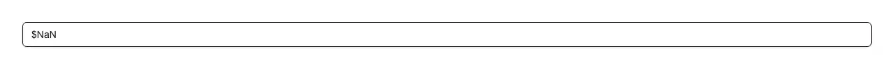

A money input that shows a grouped, currency-formatted amount ($1,234.50) when idle and the raw number while you're editing, so the cursor never fights the thousands separators or symbol. Use it in any form that takes an amount: a price or product cost field, an invoice/quote line item, a budget/limit/goal, a donation, tip, or payment amount, a salary or rate field, an expense entry, or a checkout total. Common asks it answers: "currency input", "money input", "price field", "formatted amount input", "thousands separator input", "dollar/euro input", "react-currency-input alternative". shadcn/ui ships no currency or money field — you'd otherwise bolt masking onto its Input by hand; this packages it: value/onValueChange work in plain numbers (major units, e.g. 1234.5), not strings, so there's no parsing on your side, and it commits the rounded number on blur to the currency's own precision. The symbol, grouping, symbol placement, and decimal places come from Intl.NumberFormat via the `currency` (ISO 4217, default USD) and `locale` (default en-US) props, so $/€/¥ and 2-decimal vs 0-decimal (JPY) currencies all render correctly with no hardcoding. Typing follows that same locale, so comma-decimal locales (de-DE, fr-FR) accept "1.234,50" and "1234,50" rather than silently misreading them, and grouping characters or a pasted currency symbol are ignored; set allowNegative for refunds or adjustments. It stays controlled or uncontrolled like a native input, forwards a ref to the real <input> (so <Label htmlFor>, name, placeholder, and form libraries like react-hook-form all work), uses inputMode="decimal" for a numeric mobile keypad, and is styled with shadcn tokens (border-input, ring, muted-foreground, tabular-nums) for automatic light/dark theming with no extra dependencies beyond your cn util. Distinct from number-input, which is a stepper for counts/quantities with +/− buttons; this one is for formatted money.

Rendered on the shadcn default neutral palette with harness-generated props.
pnpm dlx shadcn@4.21.0 add @pulld/currency-input
| licence | POINTER |
|---|---|
| primitive base | none |
| type | registry:ui |
| files | src/components/ui/currency-input.tsx |
| npm deps pulled | none beyond the pre-installed peer set |
| registry deps | — |
| semantic / palette / hex | 3 / 0 / 0 |
| writes shared ui/ | yes — can overwrite the project’s own primitives |